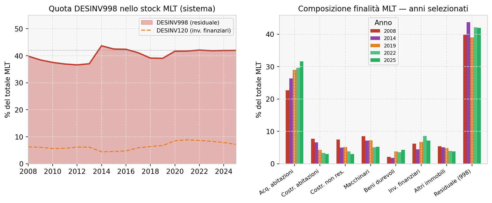

La finalità del finanziamento bancario
Evidenze esterne e riferimenti operativi per controlli proporzionati
Banche e credito
Agevolazioni e garanzie
Quanta parte del credito bancario a medio-lungo termine non ha una finalità dichiarata, perché e come verificarla: regole, dati pubblici della Banca d’Italia, agevolazioni pubbliche, open banking.
Paolo Volterra ![]()
Sommario
Questo studio ricostruisce la finalità del finanziamento bancario esclusivamente attraverso evidenze esterne e pubblicamente accessibili: norme, segnalazioni aggregate, open data, documenti istituzionali e letteratura. Non valuta le procedure delle singole banche: organizza invece una serie di riferimenti utilizzabili per rafforzare il lavoro che gli intermediari già svolgono nel controllo della destinazione, nella prevenzione delle frodi e nell’intercettazione delle irregolarità. In questo perimetro, la finalità viene raccolta all’origination ma raramente emerge come oggetto di una verifica ex post standardizzata e osservabile nei dati pubblici. Le segnalazioni alla Banca d’Italia mostrano che il 42% dello stock di prestiti a medio-lungo termine e il 63% delle nuove operazioni non presenta una finalità specifica codificata (categoria residuale DESINV998). Questo lavoro esamina il problema da tre angolazioni complementari.
Sul piano normativo, il framework prudenziale bancario presidia soprattutto la regolarità procedurale — verificare che l’erogazione sia avvenuta in linea con la delibera — mentre la finanza pubblica ha percorso in trent’anni la strada che porta alla legittimità basata sui risultati: dalla documentazione della spesa (D.lgs. 123/1998) al pagamento condizionato al raggiungimento dei milestone (Reg. 2021/241 — RRF), fino alla codificazione della valutazione ex ante/in itinere/ex post come principio generale (D.lgs. 184/2025).
Il confronto con le agevolazioni pubbliche mostra un diverso grado di formalizzazione della finalità. Gli interventi pubblici devono conformarsi al diritto dell’Unione europea applicabile, alla disciplina degli aiuti di Stato e alle regole dei singoli programmi; la destinazione delle risorse, la documentazione e i controlli assumono quindi una funzione costitutiva nell’architettura dell’intervento. Nel credito bancario ordinario, invece, dalle evidenze pubblicamente osservabili non emerge uno standard tecnico generale equivalente di verifica ex post dell’uso dei fondi.
Sul piano tecnologico-istituzionale, la verifica ex post è già realizzata in produzione da intermediari di frontiera (AFC Digital Hub, Intesa Sanpaolo, operativo dal 2022) e il quadro normativo si sta convergendo — tramite il pacchetto europeo AML 2024, l’avvio di AMLA, il Green Bond Standard europeo (Reg. 2023/2631) e la CSRD — verso standard più stringenti di verifica della finalità. Il credito bancario privato ordinario rimane tra i comparti meno presidiati da standard specifici.
Lo studio usa pertanto le agevolazioni pubbliche come termine di confronto istituzionale. Non propone di assimilare automaticamente il credito privato all’intervento pubblico, ma ordina principi, dati e soluzioni — finalizzazione del prodotto, esplicitazione della finalità, tracciabilità, proporzionalità dei controlli e analisi delle anomalie — che possono migliorare i presidi bancari e renderne più osservabili gli esiti.
Parole chiave
finalità del credito, DESINV, agevolazioni pubbliche, moral hazard, AnaCredit, EBA GL/2020/06, AMLA, PSD2, prevenzione delle frodi, finanza sostenibile
Versione citabile su Zenodo, con il PDF: doi.org/10.5281/zenodo.20342444.
1 Introduzione
La finalità del finanziamento bancario è l’attributo che descrive lo scopo per cui il debitore ha richiesto il credito: acquisto di macchinari, ristrutturazione immobiliare, liquidità per il capitale circolante, acquisto di abitazione, investimento verde. Viene dichiarata all’origination, registrata nei contratti, nei registri creditizi (AnaCredit, Centrale dei Rischi italiani) e nel reporting regolamentare obbligatorio verso Banca d’Italia.
L’oggetto dello studio non sono le procedure interne delle singole banche, che le fonti disponibili non consentono di osservare, ma lo status quo esternamente documentabile. L’analisi considera norme, dati aggregati, documenti istituzionali, informazioni pubblicate dagli operatori e letteratura. Quando un controllo non emerge da queste fonti, il risultato riguarda la sua osservabilità pubblica: non equivale alla prova che quel controllo non esista internamente.
Le evidenze esterne mostrano un continuum: alcuni prodotti incorporano la finalità e il relativo riscontro; altri affidano il controllo alle condizioni contrattuali, ai presidi interni e ai segnali di anomalia. Il margine di miglioramento riguarda la standardizzazione proporzionata e l’osservabilità degli esiti, non una presunta assenza generalizzata di controlli.
Questo lavoro interpreta la diversa verificabilità della finalità come il risultato congiunto di tre fattori: architettura dell’offerta e forma tecnica; condizioni previste dalla decisione di credito e dal contratto; raccordo tra controlli creditizi, presidio antifrode e antiriciclaggio. La minore formalizzazione osservabile rispetto alle agevolazioni pubbliche costituisce un termine di confronto, non un giudizio sulle procedure interne degli intermediari.
L’evidenza quantitativa è netta. Le tavole della Banca d’Italia sullo stock di prestiti a medio-lungo termine mostrano che la categoria residuale DESINV998 — prestiti senza finalità specifica codificata — copre il 42% dello stock aggregato (€525 miliardi su €1.249 miliardi nel 2025) e il 63% delle nuove operazioni nello stesso anno. Questo dato, analizzato nel tempo, presenta componenti sia strutturali (la finalità non è campo obbligatorio nelle segnalazioni per i prestiti alle imprese) sia dichiarative (il mix di incentivi può distorcere la classificazione).
L’evidenza normativa è altrettanto netta, ma in senso opposto. Mentre il framework bancario prudenziale è rimasto a una logica di regolarità procedurale — verificare che l’erogazione sia avvenuta in linea con la delibera di credito — la finanza pubblica ha percorso in trent’anni la strada verso la legittimità basata sui risultati: dal condizionamento all’uso documentato del 1998 al pagamento-milestone del PNRR, alla codificazione della valutazione ex post come principio generale del Codice degli incentivi (D.lgs. 184/2025). Il credito bancario privato conserva, rispetto a questa genealogia, un impianto più vicino alla regolarità procedurale che alla verifica documentata del risultato.
Il sistema tuttavia sta convergendo. Il pacchetto europeo AML 2024, l’avvio di AMLA, l’EU Green Bond Standard (Reg. 2023/2631) e il DPCM 84/2026 segnalano una traiettoria verso forme più stringenti di verifica della finalità. Chi pubblica studi empirici prima dell’entrata in vigore di questi strumenti ha un vantaggio evidenziale per le decisioni di policy.
Contributi dello studio. Questo lavoro offre alle banche, ai supervisori e ai ricercatori: (i) una misurazione sistematica della qualità del dato DESINV nelle segnalazioni BdI, con dati aggregati; (ii) una genealogia normativa con testi primari che documenta il divario tra finanza pubblica e credito bancario nella governance della finalità; (iii) un confronto istituzionale che individua nei principi di finalizzazione, tracciabilità e valutazione delle agevolazioni pubbliche un possibile riferimento; (iv) una scala operativa che collega prodotti, dati disponibili e controlli utili a intercettare deviazioni, frodi e irregolarità, senza postulare l’identità tra credito privato e intervento pubblico.
Struttura. La Sezione 2 introduce la tassonomia dei failure mode (F1/F2/F3). La Sezione 3 analizza il gap regolatorio e la genealogia normativa. La Sezione 4 misura il gap con i dati DESINV. La Sezione 5 sviluppa il confronto con le agevolazioni pubbliche e con il quadro dell’Unione europea. La Sezione 6 delinea le traiettorie tecnologiche e istituzionali verso la verifica. La Sezione 7 conclude con un menu di policy.
2 Tre failure mode: una tassonomia operativa
Prima di analizzare il problema è necessario distinguere tre fenomeni spesso confusi sotto l’etichetta “mancata verifica della finalità”:
| Failure mode | Quando si manifesta | Responsabile primario | Canale di intercettazione attuale |
|---|---|---|---|
| F1 — Selezione | All’origination: la banca finanzia un soggetto ineleggibile (già in crisi, fraudolento, collegato a strutture criminali) | La banca | Ispezioni prudenziali; UIF/Procura |
| F2 — Dirottamento immediato | Al disbursement: i fondi vengono usati subito per scopi diversi (rimborso debiti preesistenti, distrazione verso conti personali) | Il debitore | Intelligence UIF (SOS) — con 2-3 anni di ritardo |
| F3 — Deviazione ex post | Mesi o anni dopo l’erogazione: il debitore, inizialmente eleggibile, alla fine usa i fondi per scopi diversi da quelli dichiarati | Il debitore | Nessun canale sistematico |
Il presente lavoro si concentra su F2 e F3. F1 è coperto da letteratura consolidata sulla criminalità organizzata nel settore bancario [1], dal diritto penale, e da indagini giudiziarie in corso. F2 e F3 non sono intercettati sistematicamente da nessuno dei canali regolatori esistenti.
3 Il gap regolatorio: un framework principle-based in un contesto che evolve
3.1 Cosa prevede il framework attuale
Il framework regolatorio sul monitoraggio della finalità del finanziamento bancario è frammentato in almeno cinque strumenti distinti, con coperture e gradi di vincolatività diversi:
| Strumento | Oggetto | Gap |
|---|---|---|
| EBA GL/2020/06, par. 46 [2] | Controllo al disbursement: l’erogazione deve avvenire “in linea con la decisione di credito e il contratto”. | Se la destinazione è una condizione deliberata o contrattuale, la banca deve verificarla; la disposizione non introduce da sola un controllo universale dell’uso finale. |
| EBA GL/2020/06, par. 251-252 | Monitoraggio ongoing delle condizioni contrattuali, inclusi covenant. | Condizionale: si attiva solo se la finalità è formalizzata come condizione nel contratto — rara nel credito PMI ordinario. |
| EBA GL/2020/06, Annex 2 [2] | Per le imprese richiede informazioni sulla finalità e, “se del caso, prova della finalità del prestito”. | La prova è esplicitamente prevista ma proporzionata al caso; l’Annex riguarda l’origination e non formula un obbligo indistinto di verifica successiva. |
| D.lgs. 231/2007, Art. 35 + Provv. UIF 2023 | SOS senza soglia monetaria; coerenza tra transazioni e finalità è criterio di sospetto. | Canale episodico (SOS), non sistematico; nessun indicatore dedicato alla deviazione di finalità nel credito privato ordinario. |
| Regole delle agevolazioni pubbliche | Finalità, spese ammissibili, documentazione e controlli sono definiti dal programma nel quadro nazionale ed europeo applicabile. | Perimetro specifico dell’intervento; disciplina non automaticamente trasferibile al credito ordinario. |
Il risultato è che:
- Obblighi di destinazione e controllo esistono nel perimetro pubblico secondo la disciplina europea e nazionale e le regole dei singoli programmi
- Nel credito ordinario gli obblighi dipendono anche dal prodotto, dalla decisione creditizia e dal contratto: la conformità dell’erogazione alle condizioni deliberate deve essere controllata
- Non emerge invece uno standard tecnico uniforme e trasversale a tutti i finanziamenti che imponga la verifica successiva dell’uso finale dei fondi indipendentemente dalle condizioni pattuite
Questa distinzione è sostanziale. Un finanziamento a medio-lungo termine può subordinare l’erogazione alla presentazione della fattura, di uno stato di avanzamento o di altra evidenza dell’acquisto; in quel caso il controllo della destinazione discende dalla delibera e dal contratto. Nel leasing la finalizzazione è incorporata nell’acquisto e nella proprietà del bene. Nel factoring, nell’anticipo fatture e negli anticipi su flussi, l’operazione trova riscontro nei crediti o nei flussi sottostanti. Il problema residuo riguarda soprattutto i prodotti nei quali la finalità non è strutturalmente vincolata o tradotta in una condizione verificabile. Anche questa ricostruzione si basa sulle caratteristiche contrattuali pubblicamente osservabili e non censisce le procedure interne adottate dai singoli intermediari.
La distinzione trova riscontro anche nella tassonomia ufficiale della Banca d’Italia. Il credito finalizzato presuppone una “stretta connessione tra l’acquisto di un bene o servizio e la concessione del finanziamento”; nel credito non finalizzato il cliente dispone invece dei fondi per esigenze generiche [3]. La fonte documenta dunque la coesistenza di prodotti con gradi diversi di vincolo, non l’assenza generalizzata di controllo.
La BCE colloca questi obblighi nella vigilanza sul ciclo del credito e segnala che alcune banche devono ancora “fully comply with the EBA guidelines on loan origination and monitoring” [4]. Il richiamo prova la rilevanza prudenziale del framework EBA, senza trasformarlo in una regola autonoma sull’uso finale dei fondi.
Anche i principi FSB sui mutui residenziali delimitano il proprio oggetto: “focus on the credit granting decision rather than wider issues of credit risk management” [5]. Il documento è quindi evidenza di standard rigorosi all’origination, non di un obbligo generale di verifica della destinazione durante l’intera vita di ogni prestito.
Tre funzioni regolatorie distinte. Un punto di frequente confusione: “Banca d’Italia” esercita tre funzioni con oggetti e poteri diversi sul tema della finalità.
| Funzione | Base legale | Rapporto con la finalità |
|---|---|---|
| UIF (intelligence finanziaria) | Art. 6 D.lgs. 231/2007; autonoma presso BdI | Riceve SOS; la finalità dichiarata entra nell’analisi quando i flussi ne divergono. Canale episodico. |
| BdI Vigilanza (supervisione prudenziale) | TUB (D.lgs. 385/1993); EBA GL/2020/06 | Verifica le procedure di concessione (par. 46, 251-252). Non aggrega né riporta dati sull’esito della verifica. |
| BdI come autorità AML | D.lgs. 231/2007, Art. 7 ss. | Ispezioni di conformità AML. Controlla che le banche abbiano presidi adeguati; non misura direttamente la deviazione nel portafoglio. |
Il caso Banca Progetto è stato intercettato dal canale (1) — UIF intelligence — e non dai canali (2) o (3). L’esito è coerente con un framework che non prevede la verifica sistematica della finalità per il credito privato.
3.2 La genealogia: trent’anni di divario
La frattura storica riguarda il passaggio dal controllo della regolarità formale della spesa alla legittimità dell’erogazione fondata sulla dimostrazione della destinazione, dell’attuazione e, infine, del risultato.
Questa frattura è al centro del confronto tra finanza pubblica e credito bancario nella governance della finalità. La finanza pubblica ha percorso in trent’anni la strada verso la legittimità basata sui risultati; il framework prudenziale bancario è rimasto al paradigma pre-1998 della regolarità procedurale.
| Anno | Tappa | Principio introdotto | Fonte |
|---|---|---|---|
| 1998 | D.lgs. 123/1998 | Erogazione condizionata alla documentazione della spesa (ultima quota dopo rendiconto) | [6] |
| 2011 | Piano di Azione Coesione | Presa d’atto: assorbimento senza attuazione → disimpegno automatico (regola N+2 ESIF) | DPC 2011 |
| 2013 | Reg. 1303/2013, artt. 20-22 | 6% delle risorse ESIF condizionato al raggiungimento dei target intermedi al 2018 | [7] |
| 2021 | Reg. 2021/241 (RRF), artt. 20, 24 | 100% del pagamento condizionato al raggiungimento dei milestone; nessun pagamento per la sola spesa | [8] |
| 2024-26 | L.207/2024, commi 857-858 + DPCM 84/2026 | Estensione ai contributi nazionali significativi (>1M€/anno o ≥50% entrate): relazione annuale al MEF entro 30 aprile | [9] |
| 2026 | D.lgs. 184/2025 (Codice degli incentivi) | Valutazione ex ante/in itinere/ex post come principio generale; sostituisce D.lgs. 123/1998 | [10] |
Testi primari — le due cesure principali:
Il Reg. 1303/2013 introduce per la prima volta una riserva finanziaria condizionata al raggiungimento dei target. L’art. 20 stabilisce: “Il 6 % delle risorse destinate al FESR, al FSE e al Fondo di coesione […] costituisce una riserva di efficacia dell’attuazione che è stabilita nell’accordo e nei programmi di partenariato ed è destinata a priorità specifiche conformemente all’articolo 22.” L’art. 22(7) prevede rettifiche finanziarie in caso di grave carenza nel raggiungimento dei target finali.
Il Reg. 2021/241 compie il salto paradigmatico. L’art. 24(2) stabilisce che il pagamento avviene solo “dopo aver raggiunto i traguardi e gli obiettivi concordati”; l’art. 24(6) dispone la sospensione del pagamento se i traguardi “non sono stati conseguiti in misura soddisfacente”. La logica è invertita rispetto al credito bancario: nel RRF il denaro segue la dimostrazione del risultato; nel credito bancario il denaro precede qualsiasi verifica.
Il DPCM 84/2026 «domestica» questa logica applicandola ai contributi nazionali significativi: l’art. 2(1) obbliga gli organi di controllo dei beneficiari a inviare al MEF-RGS entro il 30 aprile una “relazione contenente le risultanze delle verifiche effettuate” sull’utilizzo dei contributi “nel rispetto delle finalità per le quali i medesimi sono stati concessi”.
In questa genealogia il credito bancario privato conserva un’impostazione assimilabile al paradigma pre-1998: il framework EBA GL/2020/06, par. 46, presidia soprattutto la regolarità procedurale dell’erogazione e non introduce uno standard autonomo di verifica dell’uso effettivo dei fondi.
3.3 Il gap nella letteratura
La ricognizione delle fonti istituzionali e della letteratura economico-bancaria pubblicamente accessibile non ha individuato lavori specificamente dedicati alla verifica ex post della finalità nel credito bancario europeo. Entro il perimetro della ricognizione svolta, il gap appare documentabile:
- Non sono stati individuati studi empirici che misurino la frequenza di deviazione della finalità in portafogli bancari europei
- Non sono stati individuati studi teorici che modellino il tradeoff banca-debitore sulla verifica post-erogazione
- Non sono state individuate analisi comparative tra paesi UE sulle prassi di verifica
- Non sono stati individuati studi sulla qualità del dato “finalità” nelle segnalazioni AnaCredit / Centrale dei Rischi
- Non sono stati individuati studi sull’uso del campo PURPOSE di AnaCredit come variabile nei modelli di credit risk
Esiste letteratura su temi adiacenti: monitoring bancario e intensità del controllo post-erogazione [11], [12]; enforcement dei covenant e incentivi endogeni alla capitalizzazione bancaria [13]; garanzie pubbliche e addizionalità creditizia [14], [15], [16]; uso del campo PURPOSE in AnaCredit [1], [17]; green loans e use-of-proceeds [18], [19]. Nessuno affronta direttamente il problema della verifica ex post della finalità dichiarata nel credito bancario ordinario.
Il gap tra letteratura accademica e pratiche pubblicamente documentate del settore è esso stesso un dato di ricerca. L’AFC Digital Hub (Intesa Sanpaolo, operativo dal giugno 2022) implementa in produzione algoritmi di verifica ex post della destinazione dei fondi per i finanziamenti agevolati — ma non ha generato letteratura accademica indicizzata. La tecnologia esiste; la letteratura non la conosce.
4 Misurare il gap: la qualità del dato DESINV
Questa sezione misura ciò che le segnalazioni aggregate rendono visibile, non la qualità delle istruttorie o dei controlli interni. DESINV descrive la finalità codificata nel dato statistico: la categoria residuale segnala quindi un limite informativo della fonte osservata e non costituisce, da sola, evidenza di mancata acquisizione o verifica della finalità da parte della banca.
4.1 Il “buco nero” nel sistema aggregato
Le tavole della Banca d’Italia sui prestiti a medio-lungo termine (TFR10420 per lo stock, TFR10430 per le nuove operazioni) registrano la finalità dichiarata attraverso la variabile DESINV secondo la tassonomia della Circolare n. 272 (Base Dati Statistica). La categoria residuale DESINV998 (“investimenti diversi dai non-finanziari + residuale”) raccoglie i prestiti senza finalità specifica codificata.
Lettura del pattern:
La quota residuale è strutturalmente stabile al 40-42% dello stock MLT dal 2008 al 2025. Nel 2025 corrisponde a circa €525 miliardi su €1.249 miliardi di stock totale senza una finalità specifica nelle segnalazioni BdI.
Lo shock COVID ha determinato un salto di DESINV120 (investimenti finanziari) dal 6,7%
- all’8,5-8,8% (2020-2021), poi rientrato. La spiegazione più parsimoniosa invoca la riclassificazione come “investimento finanziario” di operazioni di ristrutturazione del debito nei prestiti emergenziali.
Il declino strutturale degli investimenti reali: la quota di macchinari (DESINV905) scende dall’8,5% (2008) al 5,2% (2025); le costruzioni non residenziali (DESINV912) dal 7,5% al 3,0%. La quota di finalità produttive nel portafoglio MLT si è dimezzata in 17 anni.
Il divario stock/flussi è ampio. La quota residuale nelle nuove operazioni (TFR10430) è del 63,3% nel 2025 contro il 42% dello stock. I prestiti più recenti — quelli che dovrebbero avere il profilo di rischio più aggiornato — hanno la maggiore quota di missing impliciti nel campo finalità. Il “buco” si allarga nel tempo, non si chiude.
4.2 La spiegazione strutturale: Circolare BdI n. 154
La quota elevata di DESINV998 deriva in primo luogo da un design normativo, più che da un errore dichiarativo generalizzato. La Circolare della Banca d’Italia n. 154 — l’ultimo aggiornamento in vigore è il 78°; è in consultazione pubblica una bozza di 79° aggiornamento del 14 luglio 2026 [20] — chiarisce nella nota “F” al Tomo III (testo integrale del 77° aggiornamento, marzo 2025):
“LA INDICAZIONE DELLA VARIABILE ‘FINALITÀ DEL CREDITO’ RIGUARDA SOLTANTO LE ‘FAMIGLIE’ E LE ‘ISTITUZIONI SENZA SCOPO DI LUCRO’ (SOTTOSETTORI 51, 60, 61, 86 E 87).”
Per i prestiti alle imprese la variabile finalità non è richiesta nella Matrice dei Conti (A1). Tutti i finanziamenti a imprese senza finalità codificata si accumulano in DESINV998. La quota strutturalmente assente rappresenta quindi il segmento di portafoglio che, per design normativo, non ha un obbligo di classificazione: non va letta automaticamente come rumore casuale o come uso improprio dei fondi.
Questo ha due implicazioni metodologiche critiche per la ricerca empirica:
- Prima di misurare il grado di misclassificazione dichiarativa, occorre isolare la quota strutturalmente assente (imprese senza obbligo) dalla quota dove l’obbligo esiste ma la finalità è dichiarata come generica (famiglie e ISL con DESINV998)
- Il confronto internazionale è confuso se non si tiene conto del fatto che altri paesi potrebbero avere requisiti di segnalazione diversi
4.3 Scomporre il residuale: struttura normativa, prodotto, dichiarazione
Il dato residuale non è una proprietà uniforme del sistema. Concorrono almeno tre componenti:
- quota strutturalmente non classificata — finanziamenti per i quali la finalità non è campo richiesto (imprese nella Matrice dei conti, per la nota “F” della Circ. 154);
- quota di prodotto — forme tecniche o processi nei quali la finalità non è raccolta in modo granulare, oppure prodotti la cui natura è propriamente “non finalizzata” (prestito personale);
- quota dichiarativa — soggetti con obbligo che segnalano una finalità generica, più le riclassificazioni indotte da incentivi.
La separazione quantitativa delle tre componenti non è possibile con le tavole statistiche pubbliche. Nessuna tavola della Base Dati Statistica incrocia la tassonomia DESINV completa con il settore istituzionale della controparte: le tavole con la finalità (TFR10420/10430) non riportano il settore; quelle per settore (TFR10232, TFR10255, TFR10269) non riportano la finalità; la tavola per forma tecnica che espone entrambe (TFR10281) riduce la finalità a una variabile binaria. La decomposizione richiede i micro-dati AnaCredit o della Centrale dei rischi — campo PURPOSE incrociato con il sottosettore — non accessibili pubblicamente. Questo è un limite di osservabilità della fonte, non una misura di controllo mancato.
Le fonti pubbliche consentono comunque di delimitare le tre componenti. Lo stock DESINV998 (≈ 42% del totale MLT) è di dimensione inferiore allo stock MLT complessivo delle società non finanziarie: in linea di principio la sola quota strutturale — imprese senza obbligo di classificazione — può spiegare l’intero residuale, e la parte di credito alle imprese che riceve comunque una finalità codificata (tipicamente operazioni agevolate) spiega perché il residuale non lo satura del tutto. La quota “di prodotto” va ulteriormente ridotta escludendo il credito al consumo propriamente non finalizzato, che la tassonomia prevede come categoria a sé. La sola componente dichiarativa da incentivi che i dati aggregati rendono visibile e databile è l’oscillazione di DESINV120 nel triennio COVID (Figura 1): un ordine di grandezza di uno-due punti percentuali, non di decine. La priorità della ricerca empirica si sposta quindi dall’analisi aggregata all’accesso ai micro-dati.
4.4 Implicazioni per la modellistica del rischio di credito
Il campo DESINV è utilizzato nei modelli di credit risk come feature per distinguere la rischiosità di diverse categorie di impiego. In presenza di un tasso di missing impliciti del 42-63%, le implicazioni sono non banali:
- I modelli stimati sull’intero portafoglio confondono l’effetto “finalità” con l’effetto “mancanza di finalità codificata”
- La verifica della robustezza richiederebbe di stimare il modello escludendo DESINV998 e confrontare i coefficienti — un test metodologico di per sé rilevante
- I prestiti più recenti, che hanno la quota più alta di DESINV998, potrebbero avere profili di rischio sistematicamente sottostimati se l’algoritmo ha imparato a usare la finalità come segnale di qualità
5 Il parallelo con le agevolazioni pubbliche
Le agevolazioni pubbliche offrono un termine di confronto utile perché la finalità non vi opera come semplice attributo descrittivo: concorre a definire l’ammissibilità dell’intervento, le spese finanziabili, la documentazione richiesta e i controlli successivi. La destinazione delle risorse è, in questo ambito, una condizione di legittimità del finanziamento, non un dato accessorio.
La verifica dell’uso dei fondi opera su due livelli sovrapposti. Il livello comune è fissato dal diritto dell’Unione e stabilisce chi verifica, che cosa e con quali conseguenze; il livello nazionale definisce le regole di ammissibilità della spesa, gli standard documentali e gli organismi. È una distinzione utile perché mostra che la parte “rigida” delle agevolazioni — quella che davvero le separa dal credito ordinario — non sta nei dettagli procedurali nazionali, ma nell’architettura comune.
Al livello comune, i fondi in gestione concorrente sono soggetti alle “verifiche di gestione” dell’articolo 74 del Regolamento (UE) 2021/1060: controllo amministrativo della totalità delle domande di rimborso e verifiche in loco su base campionaria, svolte dall’Autorità di gestione o da controllori di primo livello funzionalmente indipendenti dall’Autorità di audit [21]. Le irregolarità comportano rettifiche finanziarie; il mancato utilizzo entro i termini determina il disimpegno automatico delle risorse (art. 105). Il RRF aggiunge il condizionamento del pagamento al conseguimento verificato di traguardi e obiettivi e un sistema di controllo interno con strumenti obbligatori di data-mining (art. 22) [8]; i fondi strutturali della programmazione precedente associavano già risorse, priorità, indicatori e verifiche [7]. La disciplina degli aiuti di Stato presidia le condizioni di compatibilità a monte — effetto di incentivazione, costi ammissibili, intensità massima — e prevede il recupero con interessi dell’aiuto incompatibile [22], [23]; l’obbligo di valutazione ex post riguarda però l’impatto dei regimi di importo maggiore, non l’uso del singolo contributo.
Al livello nazionale, il diritto dell’Unione rinvia agli Stati membri per le regole di ammissibilità (in Italia il DPR 22/2018 per i fondi 2021-2027) [24], per la designazione degli organismi di gestione, contabili e di audit, e per gli standard del rendiconto — fattura quietanzata, pagamento tracciato, relazione di avanzamento — oggi gestiti attraverso sistemi informativi unici (ReGiS per il RRF italiano). Il Codice degli incentivi generalizza per gli incentivi alle imprese il ciclo di valutazione ex ante, in itinere ed ex post e il fascicolo elettronico dell’incentivo [10].
Lo stesso meccanismo è visibile nella finanza pubblica condizionata dell’ESM: il database dei programmi espone erogazioni “as per use of funds” insieme a condizionalità e relative verifiche [25]; nelle linee sull’assistenza alla ricapitalizzazione, il monitoraggio è collegato alla “compliance with institution-specific conditionality” e all’uso delle risorse stabilito nell’accordo [26]. Sono regole della finanza pubblica condizionata, non obblighi applicabili al credito bancario ordinario; proprio per questo costituiscono un termine di confronto istituzionale trasparente.
| Dimensione | Agevolazioni pubbliche (livello comune UE + attuazione nazionale) | Credito bancario ordinario osservabile dall’esterno |
|---|---|---|
| Finalità | Condizione di ammissibilità definita dal programma | Raccolta all’origination, con granularità variabile |
| Quadro sovranazionale | Diritto UE, disciplina degli aiuti di Stato, regole del programma | Normativa prudenziale, bancaria e antiriciclaggio europea |
| Chi verifica l’uso dei fondi | Organismo indipendente designato (controllo di primo livello) + Autorità di audit | La banca, secondo delibera e contratto; nessun organismo terzo generale |
| Standard di prova | Regole di ammissibilità pubblicate + rendiconto documentale obbligatorio | Dipende dal prodotto e dal contratto; nessuno standard pubblico trasversale |
| Conseguenza della deviazione | Rettifica finanziaria, disimpegno automatico, recupero con interessi | Nel credito garantito, revoca prevista ma priva di apparato attuativo; nel credito puro, rimedi contrattuali discrezionali |
| Valutazione | Ciclo ex ante / in itinere / ex post codificato | Centrata sul rischio e sulla regolarità del rapporto creditizio |
Il parallelo non implica che il credito privato debba essere assoggettato alle stesse procedure delle agevolazioni. I due ambiti hanno natura, rischi e basi giuridiche differenti. Mostra però che ciò che distingue le agevolazioni non è un principio astratto di rigore, ma la presenza simultanea di un verificatore indipendente e di una conseguenza automatica della deviazione — ed è proprio il livello comune, non l’attuazione nazionale, a mancare del tutto nel credito garantito, dove la revoca della garanzia è prevista sulla carta ma priva del meccanismo che la attiva. Per il credito bancario la questione di policy diventa quindi più circoscritta: quali elementi di quel modello siano trasferibili in modo proporzionato, senza confondere il rapporto creditizio privato con l’amministrazione di risorse pubbliche.
Il limite conoscitivo resta essenziale. Lo studio ricostruisce lo status quo sulla base delle evidenze pubblicamente accessibili. L’assenza di procedure o risultati nelle fonti osservate indica un limite di osservabilità esterna e non dimostra, di per sé, che controlli equivalenti siano assenti nei processi interni degli intermediari.
6 Verso la verifica: design del prodotto, tecnologia e convergenza istituzionale
6.1 Il prodotto bancario come sistema di verifica distribuita
Il problema della verifica ex post viene generalmente concepito come un problema di monitoring post-erogazione. Esiste tuttavia una prospettiva alternativa: il design del prodotto bancario può incorporare la verifica ex ante, rendendo il monitoraggio ex post parzialmente superfluo.
Il caso paradigmatico è il leasing: la società di leasing acquista il bene e la struttura del prodotto rende la finalità direttamente osservabile. Il vincolo contrattuale riduce fortemente il rischio di dirottamento, pur senza escludere la necessità di controlli proporzionati.
Il continuum dei prodotti per grado di finalizzazione strutturale non è una graduatoria di qualità: ogni forma risponde a fabbisogni diversi. Serve a individuare quale evidenza sia ragionevolmente disponibile e quale controllo possa risultare proporzionato.
| Cluster | Prodotti tipici | Meccanismo di vincolo | Rischio F2/F3 |
|---|---|---|---|
| V — Vincolato | Leasing, mutuo ipotecario | Struttura contrattuale: il bene è acquistato da terzi o ipotecato | Molto basso |
| P — Parzialmente vincolato | Nuova Sabatini, mutuo macchinari con bonifico diretto, erogazione a tranche su fatture | Condizione precedent documentale; erogazione condizionata alla documentazione | Basso |
| A — Vincolato alle attività correnti | Anticipo fatture, castelletto, factoring | I fondi sono collateralizzati su crediti commerciali; uso diverso è strutturalmente difficile | Basso |
| L — Libero | Prestito chirografario generico, fido di cassa, apertura di credito in c/c | Nessun vincolo — i fondi arrivano sul conto del debitore | Alto |
| E — Emergenziale | Finanziamenti emergenziali a istruttoria semplificata | Vincolo debole e incentivo privato al controllo potenzialmente ridotto | Elevato |
Il rovesciamento operativo. Alla domanda su come verificare ex post un prestito generico si affianca una domanda precedente: quando il fabbisogno è specifico, quale combinazione di prodotto, contratto, modalità di erogazione e controllo rende la finalità verificabile senza introdurre oneri sproporzionati?
Se la finalità dichiarata è “acquisto macchinari”, esiste già un prodotto (Nuova Sabatini o equivalente proprietario) con struttura documentale che rende la verifica tautologica. Se la banca non lo usa — e invece eroga un chirografario con DESINV=905 compilato nell’istruttoria — la qualità dell’informazione di finalità dipende interamente dalla correttezza di quella compilazione, senza vincoli strutturali.
Una prima misura dell’offerta osservabile. La tavola TFR20281 della Banca d’Italia consente di distribuire i prestiti alle società non finanziarie per forma tecnica. Non misura direttamente la finalizzazione né le procedure di controllo, ma verifica quanto siano diffuse alcune strutture che possono incorporare o facilitare il riscontro della destinazione.
| Forma tecnica | Miliardi di euro | Quota del totale (%) | |
|---|---|---|---|
| 0 | Conti correnti | 48.2 | 8.0 |
| 1 | Mutui | 322.9 | 53.3 |
| 2 | Factoring | 20.0 | 3.3 |
| 3 | Leasing finanziario | 21.9 | 3.6 |
| 4 | Altri prestiti (residuo) | 192.9 | 31.8 |
La tavola documenta che le esposizioni in conto corrente sono minoritarie (8,0%); leasing e factoring, nei quali il bene, il credito commerciale o il flusso sottostante facilitano il match, valgono insieme il 6,9%. Il 53,3% classificato come mutui non può però essere considerato per intero credito finalizzato: la forma tecnica non prova da sola un vincolo di destinazione. Simmetricamente, il residuo del 31,8% di altri prestiti non coincide necessariamente con i soli chirografari generici. Il dato sostiene quindi una lettura dell’offerta per gradi di verificabilità, non una divisione binaria tra credito controllato e non controllato.
Il paradosso degli incentivi. I prodotti del Cluster L possono risultare commercialmente più agevoli, perché richiedono meno documentazione e consentono processi più rapidi. L’ipotesi che ne derivi una sotto-finalizzazione strutturale resta da verificare empiricamente: la tavola sulle forme tecniche non basta a provarla. Essa mostra però dove una migliore classificazione pubblica dei prodotti e dei controlli produrrebbe informazione utile per banche, supervisori e policy maker.
Implicazione di policy. Il modo più efficiente per aumentare la quota di portafoglio con finalità verificabile consiste nel creare incentivi a utilizzare prodotti finalizzati quando la finalità è verificabile, evitando di concentrare tutta la risposta regolatoria su obblighi generalizzati di monitoring ex post, costosi e difficili da calibrare: condizioni differenziate per Cluster V/P, ponderazione regolamentare favorevole, requisiti documentali differenziati per i finanziamenti agevolati.
Una fonte pubblica ancora poco sfruttata. Le segnalazioni di vigilanza contengono già una classificazione dei finanziamenti a medio-lungo termine per destinazione economica: la voce 58320 (“classificazione per destinazione economica: finanziamenti oltre il breve termine sull’interno”, base informativa A2 della Circolare n. 154) ripartisce lo stock per costruzioni, macchinari e attrezzature, acquisto di immobili, beni durevoli, investimenti finanziari e una categoria residuale di “altre destinazioni”. È un dato di flusso informativo obbligatorio, aggiornato trimestralmente: la dimensione e la dinamica della sua categoria residuale — così come la distribuzione tra forme di finanziamento a tasso agevolato e ordinario — sono un terreno di analisi pubblicamente disponibile per misurare quanto la finalità sia effettivamente codificata nel reporting, distinto dal fatto che essa sia vincolata a livello contrattuale.
6.2 Open banking come infrastruttura di verifica
La direttiva PSD2 consente ai servizi di informazione sui conti di accedere, con consenso esplicito dell’utente, ai conti di pagamento designati e alle transazioni associate. L’art. 67 vieta inoltre di usare, accedere o conservare dati per finalità diverse dal servizio esplicitamente richiesto [27]. L’open banking amplia quindi l’osservabilità dei flussi, ma non attribuisce automaticamente alla banca erogante un accesso generalizzato ai conti detenuti altrove e non crea, da solo, un obbligo di verificare la finalità del credito.
Se previsto su una base giuridica e contrattuale adeguata, un servizio di account information può alimentare controlli proporzionati: riscontro di pagamenti verso il fornitore dichiarato, analisi temporale post-erogazione, deviazioni verso soggetti collegati, frazionamenti e triangolazioni. Sono segnali per la revisione umana e per i presidi antifrode/AML, non prove automatiche dell’irregolarità né autorizzazioni a riutilizzare indiscriminatamente i dati.
Il consenso costituisce un limite operativo soprattutto quando il monitoraggio riguarda conti esterni. La sua assenza può impedire quella specifica fonte informativa, ma non prova di per sé un intento fraudolento e non esclude altri controlli. Una banca può disciplinare contrattualmente l’acquisizione delle evidenze necessarie, nel rispetto di necessità, proporzionalità, protezione dei dati e diritti del cliente.
Va inoltre distinta la verifica della finalità dal transaction monitoring PSD2. L’art. 2 del Regolamento delegato (UE) 2018/389 richiede ai prestatori di servizi di pagamento meccanismi capaci di rilevare operazioni di pagamento non autorizzate o fraudolente [28], [29]. È un presidio obbligatorio di sicurezza dei pagamenti: i relativi segnali e modelli possono essere utili anche nel sistema complessivo dei controlli, ma la norma non li configura come verifica generale dell’uso economico di un finanziamento.
Le evoluzioni PSD3 e Payment Services Regulation rafforzano la prevenzione delle frodi e mirano a ridurre gli ostacoli all’open banking. Alla data di aggiornamento del lavoro, l’accordo politico è stato raggiunto e i testi risultano prossimi all’adozione, ma non vanno presentati come disciplina già pienamente applicabile [30]. La traiettoria aumenta la qualità e la disponibilità dell’infrastruttura informativa; resta distinta dalla base giuridica richiesta per controllare la finalità di uno specifico rapporto creditizio.
La lettura congiunta delle fonti produce una matrice di lavoro, da calibrare per rischio, importo, prodotto e qualità dell’evidenza:
| Fase | Evidenza utilizzabile | Segnale da approfondire | Risposta proporzionata |
|---|---|---|---|
| Origination | Finalità dichiarata, preventivo, contratto, controparte | Incoerenza con attività, fabbisogno o capacità operativa | Chiarimento, documentazione mirata, adeguamento del prodotto |
| Erogazione | Fattura, SAL, bonifico al fornitore, bene o credito sottostante | Beneficiario diverso, frazionamento o modifica non spiegata | Sospensione della tranche o verifica rafforzata secondo contratto |
| Primo periodo post-erogazione | Movimenti sul conto servito e, con base adeguata, dati open banking | Rapido trasferimento, triangolazione, ritorno dei fondi, uso personale | Alert, revisione umana e raccordo con antifrode/AML |
| Vita del rapporto | Covenant, andamento dei flussi, informazioni aggiornate | Deviazione persistente rispetto a finalità e profilo atteso | Dialogo col cliente, riclassificazione del rischio, rimedi contrattuali |
| Portafoglio | Pattern per prodotto, settore e canale distributivo | Concentrazioni anomale o ripetizione di controparti | Revisione di regole, catalogo prodotti e soglie di controllo |
La matrice non crea obblighi ulteriori e non sostituisce le valutazioni legali e di conformità. Traduce lo status quo esterno in domande di controllo e mantiene gli alert separati dagli esiti: un’anomalia richiede approfondimento, non equivale automaticamente a frode o violazione.
La via istituzionale più realistica non passa per il PSD2 AISP ma per l’infrastruttura dei pagamenti istantanei. EBA Clearing ha sviluppato il servizio FPAD (Fraud Pattern and Anomaly Detection), integrato dal Gruppo Intesa Sanpaolo nel 2025 per le transazioni corporate: usa i dati di pagamento che la banca già processa come propria banca principale del debitore, senza richiedere un consenso aggiuntivo per l’accesso ai conti. È una via regolamentarmente più lineare e tecnicamente già funzionante. La letteratura empirica conferma il principio sottostante: [12] documentano, sul mercato dei prestiti sindacati statunitensi, che le banche titolari del conto operativo del debitore monitorano significativamente di più perché hanno accesso diretto ai flussi di pagamento — ed esercitano questa funzione in modo misurabile. Il “main bank advantage” come infrastruttura di monitoring è dunque un risultato empirico consolidato, non solo una possibilità tecnologica.
Il caso AFC Digital Hub (Intesa Sanpaolo) è la proof of concept più avanzata in Italia. Nato il 16 giugno 2022 come società consortile a r.l. (ISP 70%, Università di Torino, Politecnico di Torino, CENTAI), implementa:
- Network & Graph Analysis per tracciare i flussi post-erogazione oltre il primo bonifico: identifica triangolazioni, società cartiere, retrocessioni (pattern F2/F3)
- Anomaly Detection comportamentale: profilo dinamico del debitore vs. peer di settore; alert su prelievi incoerenti con la finalità dichiarata (F3)
- Intelligence consortile: riconosce lo stesso attore che richiede finanziamenti garantiti presso più istituti simultaneamente (F1+F2 multi-banca)
Il pilota di aprile 2026 ha identificato 30+ casi di potenziale frode fiscale analizzando 40.000+ entità in Piemonte e Valle d’Aosta, in partnership con GdF, DIA, BdI, UIF e ABI. La partnership nazionale BdI-UIF-ABI per l’estensione del modello è stata avviata nello stesso mese.
La conclusione ricavabile dalle evidenze esterne è duplice: la tecnologia per la verifica ex post della destinazione è pubblicamente documentata come utilizzata in produzione; la configurazione del caso osservato come progetto consortile volontario segnala l’assenza, allo stato attuale, di un obbligo regolamentare equivalente per il credito privato. Questo sviluppo si inserisce nella più ampia trasformazione digitale del sistema bancario italiano documentata da [31]: la diffusione di strumenti di analisi comportamentale e di anomaly detection mostra che le condizioni tecnologiche per un monitoring più sistematico esistono almeno presso gli intermediari maggiormente attrezzati. Restano rilevanti sia il disegno normativo e gli incentivi, sia i costi di integrazione, la qualità dei dati e le differenze di capacità tecnologica tra banche.
6.3 La finanza verde come prova di scalabilità
La green finance ha percorso in cinque anni la stessa traiettoria che la finanza pubblica ha impiegato trent’anni a completare — da principi volontari a standard vincolanti per chi utilizza specifici label o rientra in determinati obblighi di disclosure:
| Anno | Strumento | Natura | Principio |
|---|---|---|---|
| 2021 | Green Loan Principles (LMA/LSTA) [32] | Volontario | Use of proceeds su conto dedicato; selezione documentata; reporting annuale |
| 2022 | Tassonomia EU + EBA Pillar 3 ESG | Obbligatorio (grandi banche) | Rendicontazione della quota di attivi “taxonomy-aligned” |
| 2023 | EU Green Bond Standard (Reg. 2023/2631) [33] | Obbligatorio per il label | Revisore esterno registrato (ESMA); relazione annuale allocazione + impatto |
| 2024 | CSRD (Dir. 2022/2464) | Obbligatorio (~50.000 imprese UE) | Rendicontazione dell’uso effettivo dei proventi per attività sostenibili |
| 2025+ | EBA Guidelines su ESG (consultazione) | In definizione | Integrazione del rischio ESG nei modelli di credit risk; verifica coerenza dichiarazioni/flussi |
La tesi è semplice: se una banca accetta i GLP, ha già implicitamente accettato il principio che la finalità del credito bancario può e deve essere verificata. L’obiezione “è troppo costoso / tecnicamente impossibile” è confutata dall’esistenza stessa dei GLP e dalla loro diffusione crescente nel mercato europeo.
Il EU Green Bond Standard rende pubblicamente osservabile una struttura di verifica esterna: un soggetto terzo (External Reviewer registrato presso ESMA) attesta l’allocazione dei proventi. Il caso è rilevante non perché sia automaticamente trasferibile al credito ordinario, ma perché mostra, in un perimetro regolato, come finalità, tracciabilità e attestazione possano essere integrate nel disegno dello strumento.
La differenza osservabile tra green finance e credito ordinario riguarda soprattutto il grado di formalizzazione. Nei green loan la verifica è richiesta dalle regole volontariamente adottate e dalla domanda degli investitori ESG; nel credito ordinario una domanda equivalente è meno strutturata nelle fonti pubbliche. Anche qui il confronto riguarda gli assetti documentati, non esclude prassi interne ulteriori degli intermediari.
6.4 AMLA come punto di convergenza istituzionale
Il pacchetto europeo AML 2024 separa due piani: l’istituzione dell’Anti-Money Laundering Authority (AMLA) e il single rulebook antiriciclaggio contenuto nell’AMLR 2024/1624 [34]. AMLA avrà sede a Francoforte; la vigilanza diretta sugli intermediari selezionati si svilupperà nella fase di avvio del nuovo assetto europeo. I suoi poteri rilevanti per la verifica della finalità:
- Supervisione diretta sulle istituzioni finanziarie ad alto rischio
- Coordinamento delle FIU nazionali (UIF per l’Italia)
- Standard tecnici vincolanti (RTS/ITS) per le procedure di monitoring delle transazioni
- Accesso ai dati delle autorità prudenziali (BCE, EBA, supervisori nazionali)
- Condivisione inter-banca: l’AMLR risolve esplicitamente le questioni GDPR e antitrust che avevano limitato la scalabilità dei modelli consortili (il TMNL olandese ha cessato volontariamente le operazioni nel luglio 2024 per riconfigurarsi sul framework AMLR 2027), abilitando legalmente la condivisione inter-banca dei pattern di anomalia
La discontinuità che AMLA può bridgare è quella tra i tre canali attuali: il supervisore prudenziale (parametri di rischio, non flussi), l’autorità AML (procedure, non risultati), l’intelligence UIF (SOS individuali, non pattern di portafoglio).
La convergenza in tre tempi:
| Periodo | Sviluppo atteso | Rilevanza per la verifica della finalità |
|---|---|---|
| 2025-2027 | AMLA viene avviata; il pacchetto AML definisce il quadro legale per condivisione dati inter-banca | Abilita il modello AFC Digital Hub a scala europea |
| 2027-2030 | RTS/ITS su procedure minime di monitoring transazionale post-erogazione per prestiti ad alto rischio | “Coerenza tra operatività e finalità dichiarata” diventa standard tecnico vincolante, non principio |
| 2030+ | Integrazione dati AMLA (flussi osservati) con AnaCredit (PURPOSE field, congelato all’origination) | La discrepanza sistematica diventa segnale di supervisione prudenziale, non solo AML |
Due scenari al 2030:
- AMLA adotta standard tecnici per la verifica della finalità → il gap regolatorio si riduce entro il 2028-2030 per le istituzioni ad alto rischio
- AMLA rimane confinata alla AML compliance → l’AFC Digital Hub e il modello consortile diventano lo standard de facto; la qualità del monitoring diventa proporzionale alla dimensione e all’investimento tecnologico della banca, non al rischio effettivo del portafoglio
In entrambi gli scenari, la ricerca empirica pubblicata prima del 2027 costituirà la base evidenziale per le decisioni di policy di AMLA nella fase di setup.
7 Conclusioni e implicazioni di policy
7.1 Findings principali
Lo studio è un repertorio per migliorare controlli già esistenti. Organizza evidenze esterne, forme tecniche e strumenti informativi che le banche possono usare per rendere più proporzionati i controlli di destinazione e più tempestiva l’intercettazione di frodi o irregolarità. Non valuta l’operato di singoli intermediari.
Il risultato riguarda lo status quo osservabile. Nelle norme, nei dati aggregati e nei documenti pubblicamente accessibili non emerge uno standard tecnico generale di verifica ex post dell’uso dei fondi nel credito bancario ordinario. Questo non dimostra l’assenza di controlli nelle procedure interne delle banche, che restano fuori dal perimetro osservato.
Il dato DESINV998 riflette componenti strutturali e dichiarative. Il 42% di residuale nello stock MLT è in parte il risultato del design normativo (esenzione per le imprese nella Matrice dei Conti, Circ. BdI 154), in parte l’effetto di incentivi che non spingono verso la classificazione accurata. La separazione empirica delle due componenti richiede un incrocio con la distribuzione settore/controparte — che è fattibile con i dati Bankit ma non è stata ancora condotta.
L’architettura dell’offerta determina una parte della verificabilità. Leasing, factoring, anticipi e finanziamenti documentali incorporano gradi diversi di riscontro. Bankit mostra che i conti correnti sono l’8,0% dei prestiti alle società non finanziarie, ma non consente di equiparare automaticamente mutui a credito finalizzato o altri prestiti a chirografari liberi.
Le agevolazioni pubbliche offrono un termine di confronto, non un modello da trasporre automaticamente. Il loro quadro nazionale ed europeo collega in modo esplicito finalità, ammissibilità, documentazione, controllo e valutazione. Il contrasto con il credito ordinario riguarda il diverso grado di formalizzazione visibile nelle fonti esterne.
PSD2 abilita dati, non un obbligo generale sulla finalità. Con consenso e nei limiti del servizio, l’open banking può supportare il riscontro dei flussi. Il transaction monitoring obbligatorio previsto dalla disciplina dei pagamenti è invece diretto a operazioni non autorizzate o fraudolente. L’integrazione operativa dei due piani richiede basi giuridiche, regole decisionali e controlli umani adeguati.
Esistono casi pubblicamente documentati di verifica tecnologicamente assistita. Le informazioni disponibili sull’AFC Digital Hub indicano che il monitoring ex post della destinazione è tecnicamente realizzabile. Non consentono, invece, di misurarne la diffusione nell’intero sistema o di escludere soluzioni interne non pubblicizzate. La diffusione dipende dal disegno normativo e dagli incentivi, ma anche dai costi di integrazione, dalla disponibilità dei dati e dalle capacità tecnologiche delle singole banche.
Le evidenze normative mostrano una maggiore formalizzazione della finalità in ambiti contigui. Agevolazioni pubbliche, finanza sostenibile e disciplina antiriciclaggio offrono segnali convergenti, ma non autorizzano a prevedere automaticamente un’identica evoluzione del credito ordinario.
8 Appendice A — Normativa: tabella completa
La tabella della Sezione 3.1 riporta la versione sintetica del quadro normativo. Le fonti primarie richiamate nel testo e nei riferimenti bibliografici consentono di ricostruirne la versione estesa.
Strumenti non inclusi nella tabella principale:
- ESRB/2019/3: amplia le categorie di finalità per i prestiti immobiliari (solo CRE/RRE)
- EBA/GL/2017/06 (SREP): vigilanza su rischio di credito; nessuna menzione di verifica finalità
- ICMA Green Bond Principles (2022): “use of proceeds” come primo pilastro; green bond, non prestiti
9 Appendice B — La genealogia normativa: testi primari
9.1 D.lgs. 123/1998, artt. 6-9
Prima norma italiana che struttura il rapporto PA-beneficiario come rapporto condizionato: l’ultima quota del contributo in conto capitale viene erogata dopo documentazione finale di spesa e controlli. Abrogato dal D.lgs. 184/2025 con effetto 1/1/2026.
9.2 Reg. (UE) 1303/2013, artt. 20-22 (testo italiano da EUR-Lex)
Art. 20 (Riserva di efficacia dell’attuazione): “Il 6 % delle risorse destinate al FESR, al FSE e al Fondo di coesione […] costituisce una riserva di efficacia dell’attuazione che è stabilita nell’accordo e nei programmi di partenariato ed è destinata a priorità specifiche conformemente all’articolo 22.”
Art. 21 (Verifica): “La Commissione, in cooperazione con gli Stati membri, effettua una verifica dell’efficacia dell’attuazione dei programmi in ciascuno Stato membro nel 2019 […] alla luce del quadro di riferimento dell’efficacia dell’attuazione stabilito nei rispettivi programmi.”
Art. 22(3): “La riserva di efficacia dell’attuazione è destinata soltanto a programmi e priorità che hanno conseguito i propri target intermedi.”
Art. 22(7): rettifiche finanziarie in caso di “grave carenza nel raggiungimento dei target finali relativi ai soli indicatori finanziari, indicatori di output e fasi di attuazione principali”.
9.3 Reg. (UE) 2021/241 (RRF), artt. 20, 24 (testo italiano da EUR-Lex)
Art. 20(2): la proposta della Commissione “stabilisce le riforme e i progetti di investimento che dovranno essere attuati dallo Stato membro, compresi i traguardi e gli obiettivi”; il contributo finanziario è erogato “a rate successivamente al conseguimento soddisfacente […] dei traguardi e degli obiettivi”.
Art. 24(2): “Dopo aver raggiunto i traguardi e gli obiettivi concordati […] lo Stato membro interessato presenta alla Commissione una richiesta debitamente motivata relativa al pagamento del contributo finanziario.”
Art. 24(6): sospensione del pagamento se “la Commissione accerta che i traguardi e gli obiettivi indicati […] non sono stati conseguiti in misura soddisfacente”.
9.4 DPCM 84/2026, art. 2(1)
“[Gli organi di controllo] provvedono a inviare al Ministero dell’economia e delle finanze — Dipartimento della Ragioneria generale dello Stato, entro il 30 aprile dell’anno successivo a quello in cui i contributi sono stati erogati, una relazione contenente le risultanze delle verifiche effettuate [sull’utilizzo dei contributi] nel rispetto delle finalità per le quali i medesimi sono stati concessi.”
(GU n. 115, 20/5/2026. In vigore 4/6/2026.)
10 Appendice C — Dati DESINV 2008-2025
| Anno | Tot_MldEur | Abit | AltImm | CosAb | CosNR | Macc | BenDur | InvFin | Resid | |
|---|---|---|---|---|---|---|---|---|---|---|
| 0 | 2008 | 993.0 | 22.7 | 5.4 | 7.7 | 7.5 | 8.5 | 2.1 | 6.2 | 39.8 |
| 1 | 2009 | 1040.0 | 23.5 | 5.5 | 7.8 | 6.9 | 9.8 | 2.0 | 6.1 | 38.4 |
| 2 | 2010 | 1139.0 | 26.6 | 5.1 | 7.7 | 6.4 | 8.9 | 2.1 | 5.6 | 37.5 |
| 3 | 2011 | 1146.0 | 27.5 | 5.0 | 7.5 | 6.2 | 9.1 | 2.0 | 5.7 | 36.9 |
| 4 | 2012 | 1103.0 | 27.1 | 5.9 | 7.5 | 5.9 | 8.8 | 1.9 | 6.1 | 36.6 |
| 5 | 2013 | 1055.0 | 27.9 | 5.8 | 7.4 | 5.7 | 8.1 | 1.9 | 6.1 | 37.0 |
| 6 | 2014 | 1109.0 | 26.4 | 5.0 | 6.6 | 5.0 | 7.1 | 1.8 | 4.4 | 43.7 |
| 7 | 2015 | 1115.0 | 26.5 | 5.8 | 6.0 | 4.7 | 7.7 | 2.4 | 4.5 | 42.5 |
| 8 | 2016 | 1123.0 | 26.9 | 5.3 | 5.3 | 4.8 | 7.9 | 2.6 | 4.7 | 42.4 |
| 9 | 2017 | 1123.0 | 27.7 | 4.9 | 4.8 | 4.4 | 8.1 | 3.0 | 5.9 | 41.1 |
| 10 | 2018 | 1142.0 | 28.1 | 4.7 | 4.5 | 5.7 | 8.2 | 3.3 | 6.3 | 39.1 |
| 11 | 2019 | 1133.0 | 29.0 | 4.8 | 4.2 | 5.2 | 7.2 | 3.8 | 6.7 | 39.0 |
| 12 | 2020 | 1232.0 | 27.4 | 4.3 | 3.7 | 4.6 | 6.2 | 3.5 | 8.5 | 41.7 |
| 13 | 2021 | 1248.0 | 28.7 | 4.1 | 3.5 | 4.2 | 5.4 | 3.6 | 8.8 | 41.7 |
| 14 | 2022 | 1269.0 | 29.6 | 4.0 | 3.3 | 3.8 | 5.1 | 3.6 | 8.6 | 42.1 |
| 15 | 2023 | 1236.0 | 30.5 | 3.8 | 3.2 | 3.5 | 5.0 | 4.0 | 8.3 | 41.8 |
| 16 | 2024 | 1225.0 | 31.0 | 3.8 | 3.1 | 3.3 | 4.9 | 4.2 | 7.8 | 41.9 |
| 17 | 2025 | 1248.0 | 31.6 | 3.8 | 3.0 | 3.0 | 5.2 | 4.3 | 7.1 | 42.0 |
Legenda: Abit=DESINV70 (acquisto abitazioni famiglie), AltImm=DESINV914 (altri immobili), CosAb=DESINV10 (costruzioni abitazioni), CosNR=DESINV912 (costruzioni non residenziali + genio civile), Macc=DESINV905 (macchinari e impianti), BenDur=DESINV110 (beni durevoli), InvFin=DESINV120 (investimenti finanziari), Resid=DESINV998 (residuale/non classificato).
Riferimenti bibliografici
[1]
B. Buchetti et al., «Organized Crime, Bank Lending and Productivity: Evidence from AnaCredit», SUERF – The European Money; Finance Forum, SUERF Policy Brief 1203, 2025.
[2]
European Banking Authority, «Guidelines on loan origination and monitoring (EBA/GL/2020/06)». EBA Guidelines, maggio 2020. Disponibile su: https://www.eba.europa.eu/regulation-and-policy/credit-risk/guidelines-on-loan-origination-and-monitoring
[3]
Banca d’Italia, «Matrice dei conti — Circolare n. 272 del 30 luglio 2008, 16° aggiornamento del 2 novembre 2022». Disposizioni segnaletiche, novembre 2022. Disponibile su: https://www.bancaditalia.it/compiti/vigilanza/normativa/archivio-norme/circolari/c272/
[4]
European Central Bank, Banking Supervision, «Supervisory priorities 2025–2027». 2024. Disponibile su: https://www.bankingsupervision.europa.eu/framework/priorities/html/ssm.supervisory_priorities202412~6f69ad032f.en.html
[5]
Financial Stability Board, «Principles for Sound Residential Mortgage Underwriting Practices». aprile 2012. Disponibile su: https://www.fsb.org/uploads/r_120418.pdf
[6]
Repubblica Italiana, «Decreto legislativo 31 marzo 1998, n. 123 — Disposizioni per la razionalizzazione degli interventi di sostegno pubblico alle imprese». Decreto legislativo, 1998.
[7]
Parlamento europeo e Consiglio dell’Unione europea, «Regolamento (UE) n. 1303/2013 del Parlamento europeo e del Consiglio, recante disposizioni comuni sui fondi strutturali e di investimento europei». Regolamento UE, dicembre 2013. Disponibile su: https://eur-lex.europa.eu/legal-content/IT/TXT/?uri=CELEX:32013R1303
[8]
Parlamento europeo e Consiglio dell’Unione europea, «Regolamento (UE) 2021/241 del Parlamento europeo e del Consiglio, che istituisce il dispositivo per la ripresa e la resilienza». Regolamento UE, febbraio 2021. Disponibile su: https://eur-lex.europa.eu/legal-content/IT/TXT/?uri=CELEX:32021R0241
[9]
Presidenza del Consiglio dei Ministri, «Decreto del Presidente del Consiglio dei Ministri 7 maggio 2026, n. 84 — Regolamento recante disposizioni attuative della legge 30 dicembre 2024, n. 207, commi 857–858». Decreto del Presidente del Consiglio dei Ministri, maggio 2026.
[10]
Repubblica Italiana, «Decreto legislativo 27 novembre 2025, n. 184 — Codice degli incentivi». Decreto legislativo, 2025.
[11]
N. Branzoli e F. Fringuellotti, «The Effect of Bank Monitoring on Loan Repayment», SSRN Electronic Journal, 2020, doi: 10.2139/ssrn.3601944.
[12]
M. T. Gustafson, I. T. Ivanov, e R. R. Meisenzahl, «Bank Monitoring: Evidence from Syndicated Loans», Journal of Financial Economics, vol. 139, fasc. 2, pp. 452–477, 2021, doi: 10.1016/j.jfineco.2020.08.001.
[13]
S. Colonnello, M. Koetter, e M. Stieglitz, «Benign Neglect of Covenant Violations: Blissful Banking or Ignorant Monitoring?», Economic Inquiry, vol. 59, fasc. 4, pp. 1503–1523, 2021, doi: 10.1111/ecin.12930.
[14]
G. Cascarino, R. Gallo, F. Palazzo, e E. Sette, «Public Guarantees and Credit Additionality During the Covid-19 Pandemic», SSRN Electronic Journal, 2022, doi: 10.2139/ssrn.4110071.
[15]
F. De Marco, «Public Guarantees for Small Businesses in Italy during COVID-19», SSRN Electronic Journal, 2020, doi: 10.2139/ssrn.3604114.
[16]
Banca d’Italia, «L’allocazione dei prestiti con garanzia pubblica alle imprese durante il Covid-19: rischio di credito e relazioni creditizie», Banca d’Italia, Temi di discussione (Working Papers) 1462, 2024. Disponibile su: https://www.bancaditalia.it/pubblicazioni/temi-discussione/2024/2024-1462/index.html
[17]
J. M. Israel, V. Damia, R. Bonci, e G. Watfe, «The Analytical Credit Dataset. A Magnifying Glass for Analysing Credit in the Euro Area», SSRN Electronic Journal, 2017, doi: 10.2139/ssrn.2985442.
[18]
A. Accetturo, G. Barboni, M. Cascarano, E. Garcia-Appendini, e M. Tomasi, Credit Supply and Green Investments. in Temi di Discussione, no. 1456. Roma: Banca d’Italia, 2024. doi: 10.32057/0.TD.2024.1456.
[19]
K. Kedward e J. Ryan-Collins, «A Modern Credit Guidance Regime for the Green Transition», SUERF – The European Money; Finance Forum, SUERF Policy Note 294, 2022.
[20]
Banca d’Italia, «Segnalazioni di vigilanza delle istituzioni creditizie e finanziarie — Circolare n. 154, bozza del 79° aggiornamento». Documento in consultazione pubblica (14 luglio 2026), luglio 2026. Disponibile su: https://www.dirittobancario.it/wp-content/uploads/2026/07/Bozza-Circolare-154-Banca-dItalia-14-luglio-2026_compressed.pdf
[21]
Parlamento europeo e Consiglio dell’Unione europea, «Regolamento (UE) 2021/1060 del Parlamento europeo e del Consiglio, recante le disposizioni comuni applicabili ai fondi in gestione concorrente». Regolamento UE, giugno 2021. Disponibile su: https://eur-lex.europa.eu/eli/reg/2021/1060/oj/ita
[22]
Commissione europea, «Regolamento (UE) n. 651/2014 della Commissione che dichiara alcune categorie di aiuti compatibili con il mercato interno (GBER)». Regolamento UE, giugno 2014. Disponibile su: https://eur-lex.europa.eu/eli/reg/2014/651/oj/ita
[23]
Consiglio dell’Unione europea, «Regolamento (UE) 2015/1589 del Consiglio recante modalità di applicazione dell’articolo 108 TFUE». Regolamento UE, luglio 2015. Disponibile su: https://eur-lex.europa.eu/eli/reg/2015/1589/oj/ita
[24]
Repubblica Italiana, «D.P.R. 5 febbraio 2018, n. 22 — Regolamento sui criteri di ammissibilità delle spese per i programmi cofinanziati dai fondi strutturali di investimento europei». Decreto del Presidente della Repubblica, 2018.
[25]
European Stability Mechanism, «Programme Database». 2026. Disponibile su: https://www.esm.europa.eu/financial-assistance/programme-database
[26]
European Stability Mechanism, «Revised Guidelines on Financial Assistance for the Direct Recapitalisation of Institutions». 2014. Disponibile su: https://www.esm.europa.eu/sites/default/files/migration_files/esm_revised_guidelines_on_financial_assistance_for_recapitalisation_-_publication.pdf
[27]
European Parliament and Council of the European Union, «Directive (EU) 2015/2366 on Payment Services in the Internal Market». 2015. Disponibile su: https://eur-lex.europa.eu/eli/dir/2015/2366/oj/eng
[28]
European Commission, «Commission Delegated Regulation (EU) 2018/389 Supplementing Directive (EU) 2015/2366 with Regulatory Technical Standards». 2018. Disponibile su: https://eur-lex.europa.eu/eli/reg_del/2018/389/oj/eng
[29]
European Banking Authority, «Does Transaction Monitoring Need to Be Real Time? Q&A 2018-4090». 2018. Disponibile su: https://www.eba.europa.eu/single-rule-book-qa/qna/view/publicId/2018_4090
[30]
European Parliament, «Payment Services and Electronic Money Services in the Internal Market: Legislative Train». 2026. Disponibile su: https://www.europarl.europa.eu/legislative-train/carriage/payment-services-and-electronic-money-services-%28directive%29/report
[31]
D. Arnaudo et al., «The Digital Transformation in the Italian Banking Sector», Banca d’Italia, Questioni di Economia e Finanza (Occasional Papers) 682, apr. 2022.
[32]
International Capital Market Association, «Green Bond Principles: Voluntary Process Guidelines for Issuing Green Bonds». ICMA / LMA Green Bond Principles, 2021.
[33]
Parlamento europeo e Consiglio dell’Unione europea, «Regolamento (UE) 2023/2631 del Parlamento europeo e del Consiglio sulle obbligazioni verdi europee». Regolamento UE (EU Green Bond Standard), 2023. Disponibile su: https://eur-lex.europa.eu/legal-content/IT/TXT/?uri=CELEX:32023R2631
[34]
Parlamento europeo e Consiglio dell’Unione europea, «Regolamento (UE) 2024/1624 del Parlamento europeo e del Consiglio, relativo alla prevenzione dell’uso del sistema finanziario a fini di riciclaggio o finanziamento del terrorismo». Regolamento UE (AMLR), 2024. Disponibile su: https://eur-lex.europa.eu/legal-content/IT/TXT/?uri=CELEX:32024R1624
Nota metodologica
Questo documento nasce dall’interazione di tre componenti. L’autore definisce le domande, esercita il giudizio critico e assume la responsabilità scientifica ed editoriale del risultato. Strumenti di intelligenza artificiale generativa sono impiegati a supporto della ricerca bibliografica, della lettura, della sintesi, della riorganizzazione argomentativa e della revisione del testo. Un’infrastruttura open source sviluppata dall’autore automatizza il reperimento, l’armonizzazione e il controllo dei dati dalle fonti statistiche ufficiali, e mantiene l’elaborazione documentata e riproducibile.
Le fonti sono pubblicamente accessibili e citate con la loro denominazione ufficiale; l’analisi è pertanto integralmente auditabile e replicabile da terzi a partire da esse. Le tabelle e i grafici sono elaborazioni dell’autore: calcoli, aggregazioni, trasformazioni e scelte di rappresentazione sono attribuibili all’autore e non agli enti produttori dei dati.
La responsabilità per le fonti utilizzate, le analisi condotte, le elaborazioni effettuate, le interpretazioni proposte e le conclusioni formulate resta interamente in capo all’autore. L’intelligenza artificiale è stata impiegata come ambiente di supporto cognitivo ed editoriale, non come fonte primaria, autore autonomo o sostituto del giudizio critico.